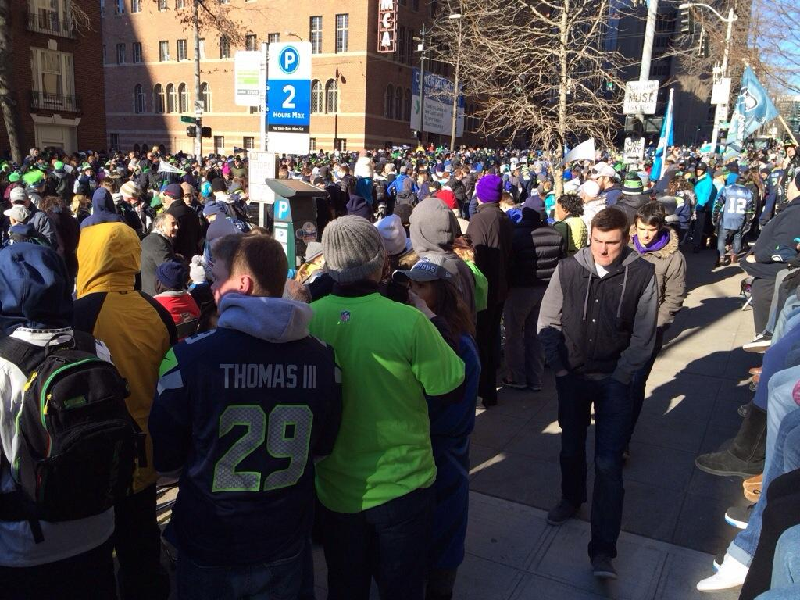
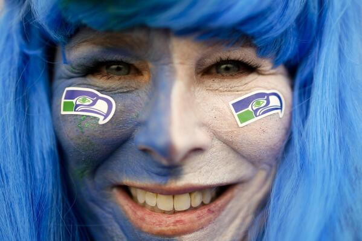
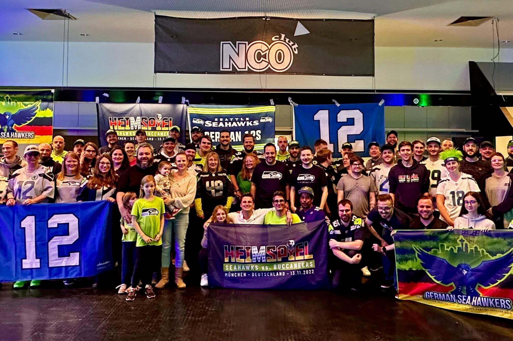

O site traz em primeira mão as notícias mais recentes sobre o time mais querido da NFL: Seattle Seahawks. O time está em uma das divisões mais fortes da NFL, a NFC Oeste (NFC west). Também fazem parte dessa divisão o Los Angeles Rams, O São Francisco 49ers e o Arizona Cardinals. Vamos traduzir para o português as reportagens encontradas em diversos sites como: o oficial do Seattle Sehawks, a ESPN-EUA e muitos outros permitindo um melhor acompanhamento por fãs brasileiros do nosso time favorito.
Na seção Agenda NFLé possível verificar a data e o horário de todos os jogos da temporada. Logo após os jogos são postadas resenhas e informações trazendo a nossa opinião sobre a atuação do time e também resenhas traduzidas de sites especializados no esporte. São apresentados também links contendo as principais jogadas e entrevistas da comissão técnica e de jogadores destaque. Por motivos de copyright não podemos postar os vídeos com os melhores momentos, há um player em que é possível acompanhar os vídeos no youtube dentro da nossa página.
Nosso site também fomenta a torcida pelo Seattle Seahawks no Brasil. Na seção eventos é possível companhar fotos das ações promovidas pelo grupo Seattle Seahawks Brasil. São encontros para assistir aos jogos, trocar informações e celebrar nosso time do coração. Inicialmente os eventos vão se concentrar no Distrito Federal, mas no futuro a ideia é que se espalhem por todo o Brasil. Serão encontros em bares locais e também em ambientes ao ar livre, a proposta é serem encontros abertos para qualquer um o único requisito é ser simpatizante do futebol americano e não tocer contra o Seahawks. A torcida por outros times não é interessante visto que pode provocar animosidade entre os mais entusiasmados torcedores de Seattle.
Para nos programar com antecedencia e poder fazer aquela festa legal com toda a família e amigos, aqui está a agenda completa do Seahawks para a temporada 2023:
Aqui passamos informações sobre os eventos promovidos pelo Seahawks Brasil. Normalmente em alguns dias de jogos marcamos encontros em bares e restaurantes do Distrito Federal para celebrar nosso time do coração. A comunidade Seahawks Brasil terá o prazer de receber você e sua família, venha participar!!!. Na lista abaixo temos a cobertura de eventos já realizados e na coluna ao lado as informaões sobre eventos futuros.
|  |  |  |
Próximos Eventos
|
| Encontro na abertura da temporada 2023 em Aguas Claras. (Brasília-DF) | Festa rave dia 24/09/23 no parque da cidade. (Brasília-DF) | Encontro temático Auditório Ulissis Guimarães 06/10/23. (Brasília-DF) |
Deixe seu contato para receber informações sobre eventos da comunidade e também sobre o Seattle Seahawks!!!!
Desenvolvido por André Carvalho - 2023